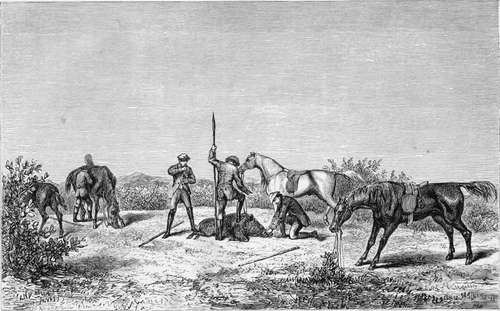

Chapter XIX. Part 3
Description
This section is from the book "Hog Hunting In The East, And Other Sports", by J. T. Newall. Also available from Amazon: Hog Hunting in the East, and Other Sports.
Chapter XIX. Part 3
" I didn't think any of my companions could follow me over, even if that part of the hedge lay in their line, which it did not, for they were mostly heavy men and not particularly well mounted; so I had the running of that pig all to myself. He soon lay out at a rattling pace when he saw me, and led over several hedges, which were, however, quite negotiable. I gradually gained on him and forced him into a lane, up which he ran. Here I closed with, and turned him, and he then left it in the vicinity of the village, and dashing across a small open bit, went over another hedge and into a field. I got well behind him and again turned him, still to the left, and he now made partly in the direction from which he had started. After going through one small thin hedge he ran along down another which there cut it at right angles.
" I had of course shouted vigorously at the start, but knew not what had become of my companions. My attention was too much concentrated on the boar for me to ascertain whether or no any were riding behind me, and if so, at what distance. But I thought from the turns we had made that they might cut in anywhere.
" The hog was getting pumped as he pounded down alongside the hedge, and I soon got close behind him. But the hedge was on his left, and he steadily refused to be pushed from it on to my spear side. There was no help for it, so I took up my horse alongside with him on my bridle hand, and prepared to spear him over it.
"Directly I raced up even with him,round he came. I made a vigorous overthrust, met him in full charge, and had my spearhead smashed off, and the bamboo splintered to my hand, and my active, experienced horse only just avoided his rip, as the superior pace at which we were going carried us past.
" The spear had evidently struck a bone probably the shoulder and the chances were the wound was by no means a disabling one, and I had nothing wherewith to renew the combat.
The Death.—among The Prickly Pear Hedges.
"As I pulled in and got after the boar with the object of keeping him in sight, I looked round, and, to my great delight, saw one of the hunters close at hand. He soon rattled up to the pig, which had now crossed into another field, and speared him with a vigorous blow down into the back. So deadly was the thrust that the boar rolled over and in a few seconds was dead—-before, indeed, the others could arrive on the scene.
" All my companions had been thrown out at the start, and it was fortunate that they had got after me at all. After having reassembled and directed the villagers to convey the dead boar to the camp some miles in the Oodeypore direction we again started in search of further sport.
" Again we tried the thorny jungle in the neighbourhood of the shooting towers, and several pig were seen. I was anxious, if possible, to preserve my horse, as I had ar good deal of marching in prospect and was but poorly supplied at the time with horse-flesh, so I determined not to ride unless there appeared a good chance of killing. Stony hills, very thickly covered with jungle, were close at hand, and the pig once in these must become lost. However, my friends galloped away while I stood on a hillock, looking out for any chance. Presently I saw one the man who had assisted me in the death of the first boar, rattling away by himself among the bushes, with a fine boar in front. The others had got away after some others. That was too much for flesh and blood to stand, and I soon found myself lamming away as hard as I could in pursuit.
"My friend was a capital rider, but very poorly mounted on a troop horse, and I soon overhauled him. He made desperate exertions to keep his place, for we were fast closing with the boar, but it was of no avail. My light weight and the superior speed and blood of my horse told, and I drew level with him and then shot past. There was a good deal of dodging among the bushes, but the ground was more open than in the other direction, and the boar never eluded us. He was getting blown, but so was my friend's horse, and the hills were close at hand.
" B-was a good and experienced pig-sticker ; and done though his horse was, I knew that he was one to avail himself of any chance I might give, however slight. So I thought I would reap the advantage of my superior speed, and prick the boar directly I was able, without waiting to deal a decisive blow. Accordingly as I ran up then having my competitor a couple of lengths or more on my left and rear—I leant far forward out of my saddle, and as the pig made a slight jink to the left, lunged out to that front. The blade went well in ; but at that very moment, and when I was struggling to recover my seat, feeling that I had overbalanced myself, a thorny bush, as luck would have it, came exactly in my line.
My horse swerved to the right to avoid it, and owing partly to my loss of seat and partly to the swerve, I shot right into the bush just behind the boar, and my riderless horse and friend galloped on.
" I was not long in picking myself up, with my beauty by no means improved by the fall. I had gone into the thorny mass head foremost, and arose with bleeding nose, and face all scratched and torn. However, my legs were sound, and I ran off after my horse. I believe he stuck well to the boar, but was eventually, as was my friend, brought up by the thick jungle which covered the hills.
" My antagonist had been unable to overhaul the boar, and it had escaped. I shortly found my horse standing among some bushes, and having managed to secure him, we retraced our steps and found the tiffin basket and some of our companions under one of the shooting towers. The rest had been unsuccessful in either bagging or spearing a pig.
" It was a great nuisance losing the boar after all, for he was a very fine one, and I think, had I not met with the fall, I should either have speared him myself with a better chance of dealing a decisive wound, turned him to my companion, or brought him to bay.
Continue to: